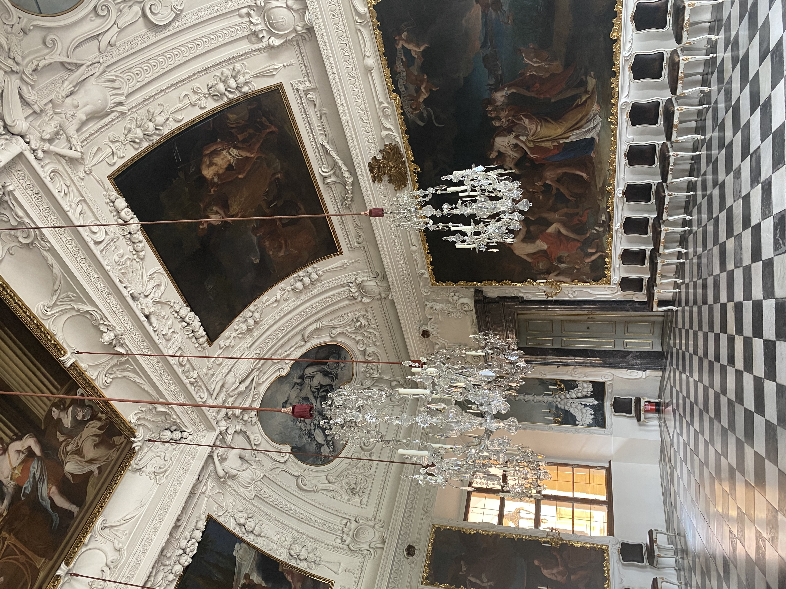
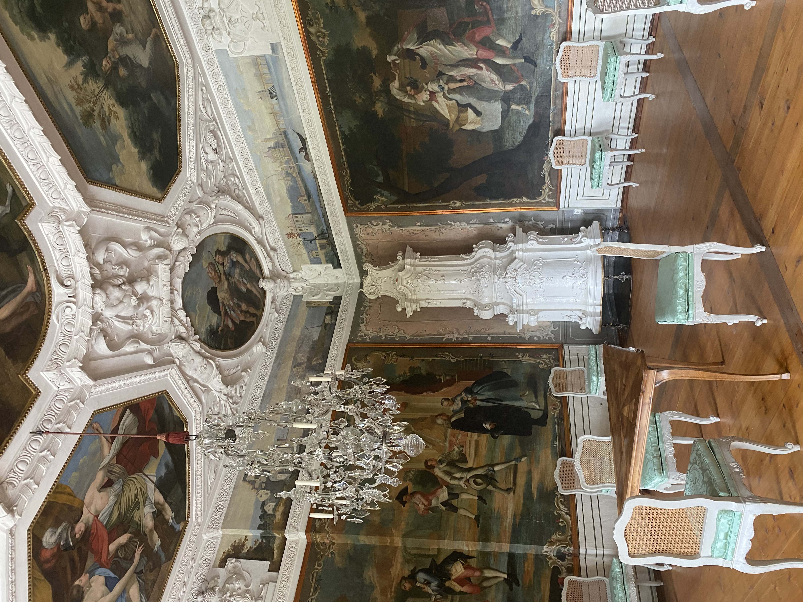
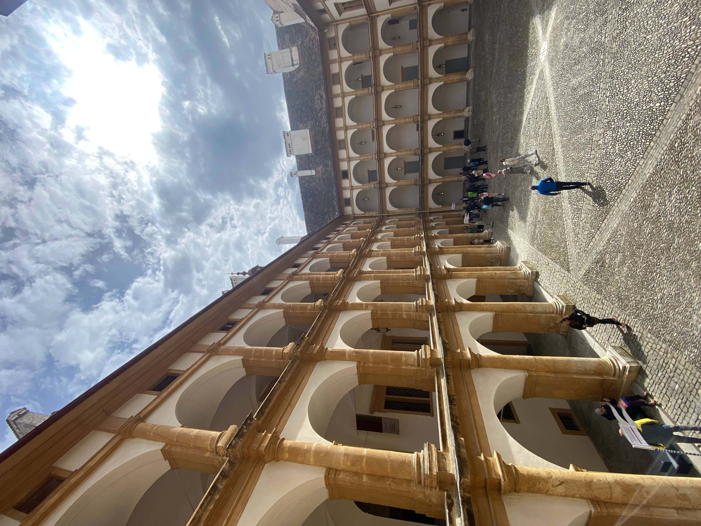
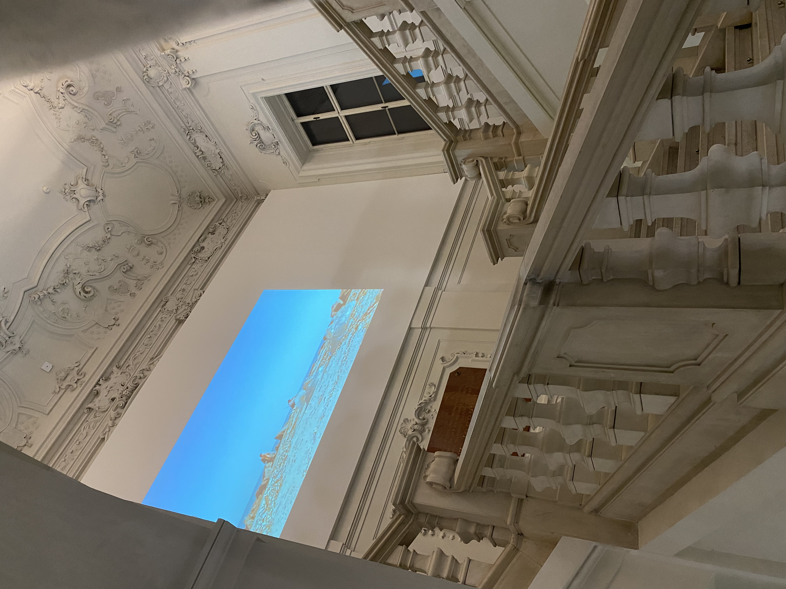
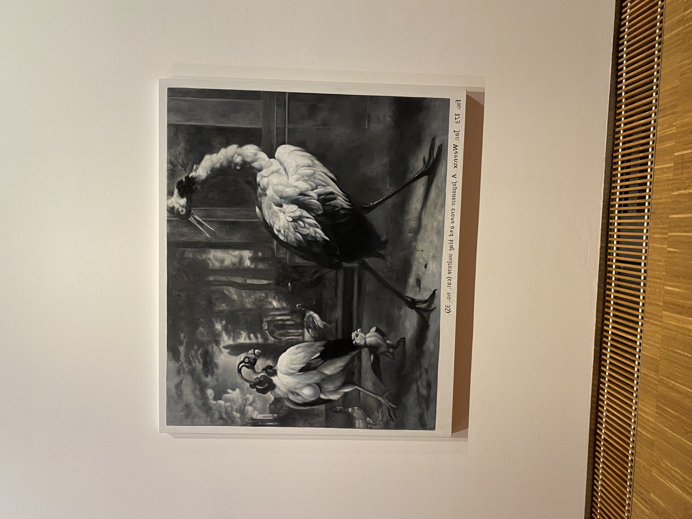
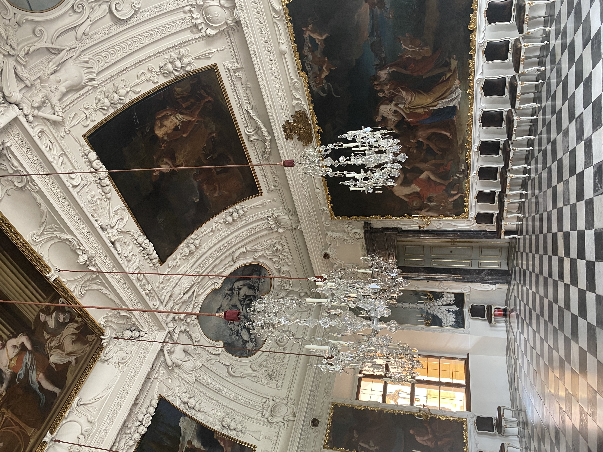
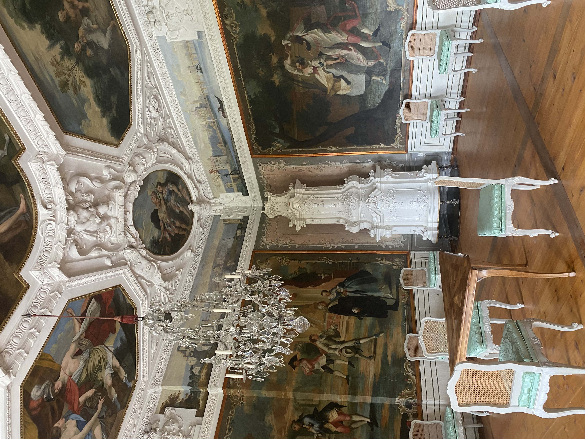
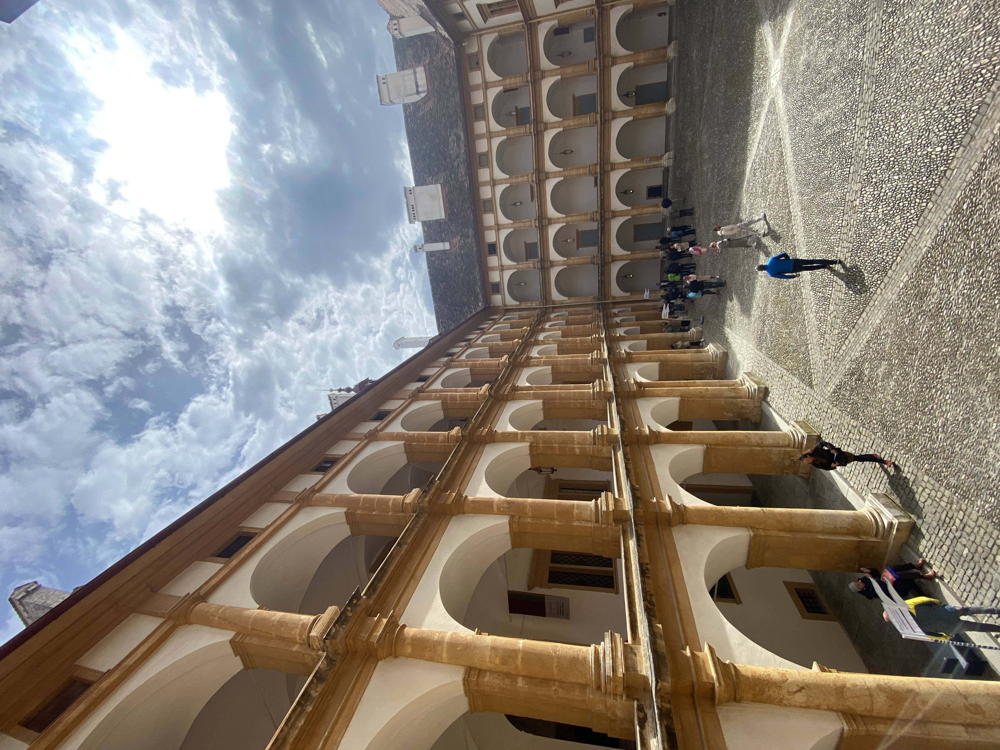
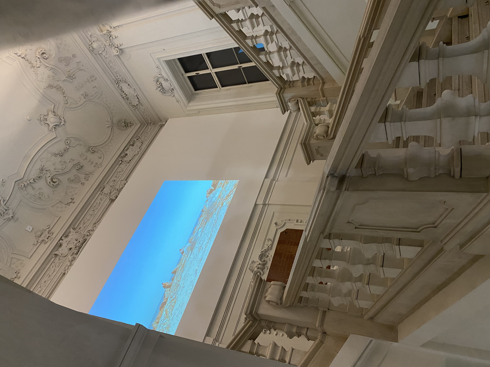
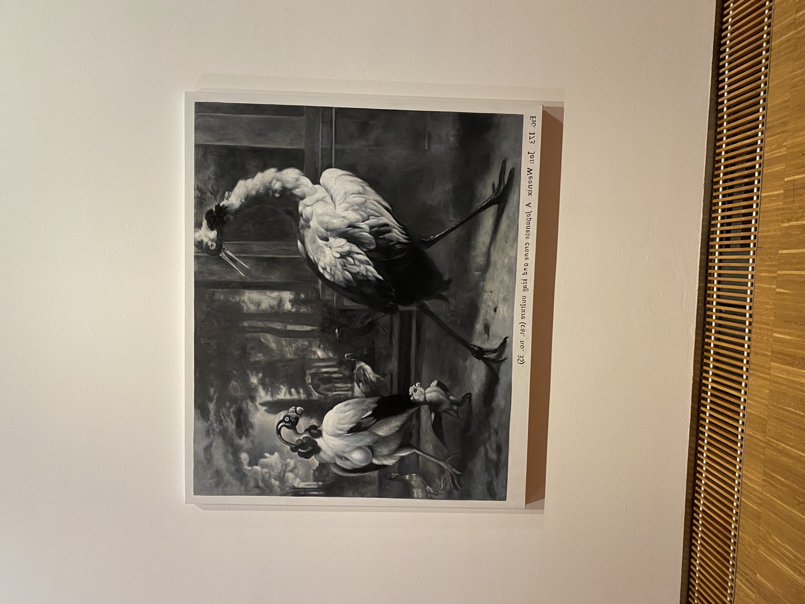

Winter in Graz - Zeit für Museen & Restaurants

 









Im Winter, wenn die Temperaturen sinken und die kurzen Tage zum Verweilen im Warmen einladen, stellt sich in Graz oft die Frage: Was tun? Meine persönliche Vermutung ist, dass viele Grazer dann am liebsten zu Hause bleiben oder essen gehen. Aber keine Sorge, Graz bietet auch abseits des häuslichen Rückzugs und der Kulinarik einige Möglichkeiten, die kalte Jahreszeit zu überbrücken.
Ein Besuch in einem der zahlreichen Museen ist immer eine gute Option. Das Landeszeughaus mit seiner beeindruckenden Rüstungssammlung ist beispielsweise ein absolutes Highlight – es ist die größte historische Waffensammlung der Welt, die noch an ihrem ursprünglichen Ort aufbewahrt wird! Auch das Schloss Eggenberg lädt mit seinen Prunkräumen und Ausstellungen zum Staunen ein. Wer wirklich auf sehr moderne Kunst steht, könnte einen Abstecher ins Kunsthaus Graz wagen, aber ehrlich gesagt, außer von außen und das Café kann ich es nicht wirklich empfehlen. Die Discotheken in Graz sind leider auch keine Freude: teurer Eintritt, immer die gleichen DJs, schlechte und überteuerte Getränke, beschissene Soundsysteme und oft ekelhafte Toiletten. Da die Stadt Graz kaum neue Genehmigungen vergibt, sieht es an dieser Front sehr mau aus. Aber einige Bars in Graz sind definitiv empfehlenswert für einen gemütlichen Abend. Bowlingbahnen gibt es leider keine, aber zahlreiche Escape Rooms bieten eine spannende Alternative für kalte Wintertage.
Fun-Facts zum Winter in Graz abseits des Schnees:
- Landeszeughaus: Es beherbergt rund 32.000 Exponate aus dem 15. bis 18. Jahrhundert, darunter Rüstungen, Waffen und Helme – ein Muss für Geschichtsfans.
- Schlossberg-Winter: Auch wenn kein Schnee liegt, ist der Schlossberg im Winter mit seinen Wegen und Aussichten einen Besuch wert, besonders bei klarer Winterluft.
- Grazer Museen-Vielfalt: Von der Kunst über die Naturkunde bis zur Geschichte – Graz hat eine breite Palette an Museen für jeden Geschmack.
- Kulinarische Hochburg: Auch ohne Aktivitäten ist Graz bekannt für seine ausgezeichnete Gastronomieszene, die im Winter besonders zum Aufwärmen einlädt.